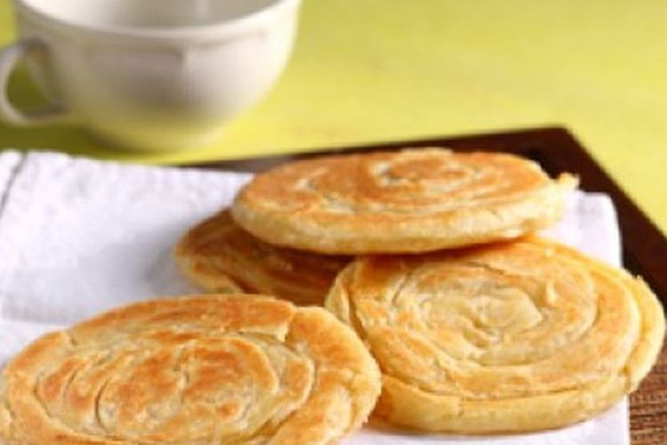

RESEP KUE MARYAM

bahan-bahan
250 gr tepung
1 butir telur
3 sdm margarin,lelehkan
100 ml air hangat
2 sdm susu bubuk
1/2 sdt garam
margarin leleh untuk olesan
minyak untuk merendam
Langkah-Langkah
- Campur semua bahan jadi satu

- Uleni sampai kalis, jangan takut lengket, lumuri tangan dengan tepung

- Kalisnya adonan canai tidak sekalis adonan roti, kira2 seperti ini sudah cukup